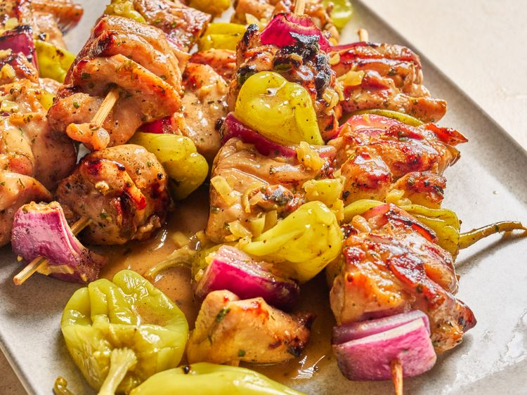

Home
Mississippi chicken skewers

Yummy chicken skewers
Ingredients
- 1 (1 ounce) packet ranch seasoning mix
- 1 (1 ounce) package au jus seasoning mix, divided
- 2 pounds skinless boneless chicken thighs, cut into 2-inch pieces
- 3 tablespoons olive oil
- 15 pepperoncini peppers, divided
- 1/4 cup pepperoncini brine, divided
- 1 red onion, cut into 2-inch pieces
- 6 tablespoons cold butter, divided
- 3/4 cup water
Steps
- Remove 1 tablespoon of ranch and au jus seasoning mix from each package and set aside.
- Add chicken to a bowl; add remaining ranch seasoning, remaining au jus seasoning, olive oil, and 2 tablespoons pepperoncini brine to the bowl. Toss well and let stand for 20 to 30 minutes.
- Preheat the oven to 375 degrees F (190 degrees C). Divide and thread chicken, 12 pepperoncini peppers, and onion evenly among skewers.
- Heat a grill or grill pan to medium-high heat, about 425 degrees F (220 degrees C). Lightly coat grill grates and place skewers on hot grill or grill pan. Cook until browned and easily released from grill, about 2 minutes on each side. Transfer to a rimmed baking sheet.
- Bake skewers in the preheated oven for 15 minutes. An instant read thermometer inserted in the center of chicken pieces should read 165 degrees F (74 degrees C).
- Meanwhile, prepare the sauce. Chop remaining banana peppers very finely. Heat 2 tablespoons butter in a small saucepan over medium-high heat until melted. Add reserved ranch seasoning and au jus seasoning and chopped peppers and cook 1 minute. Add remaining 2 tablespoons brine and water to saucepan and simmer until reduced by half. Cut remaining butter into cubes. Remove sauce from heat and whisk in butter cubes until just melted.
- Serve skewers with butter sauce.